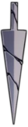
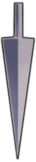
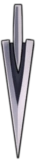
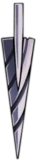
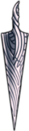

Aiguillon
L' Aiguillon est le terme utilisé pour désigner l’arme utilisée par certains ennemis, PNJs et boss dans Hallownest, y compris le Chevalier. L’aiguillon peut être amélioré quatre fois en donnant des Geos et du Minerai pâle au Fabricant d’aiguillons situé dans la Cité des Larmes, améliorant les dégâts et attaques de mêlées. Les charmes Force fragile et Fureur des disparus augmentent les dégâts de l’aiguillon
Amélioration de l'aiguillon
Aiguillon, Description & Coût de l'amélioration

Vieil aiguillon
Une arme traditionnelle d'Hallownest. Sa lame est émoussée par le temps et l'usure.
Arme de départ
Dégâts: 5

Aiguillon pointu
Une arme traditionnelle d"Hallownest, restaurée et redoutable.
Coût de l'amélioration: 250
Dégâts: 9

Aiguillon forgé
Une arme fendue d’Hallownest. La lame est équilibrée d'une façon exquise.
Coût de l'amélioration: 800 + 1 Minerai pâle

Aiguillon en spirale
Une arme puissante d'Hallownest, surpassant toutes les autres armes existantes.
Coût de l'amélioration: 2000 + 2 Minerai pâle
Dégâts: 17

Aiguillon pur
L'arme ultime d'Hallownest. Reforgé à la perfection, ce vieil aiguillon révèle sa véritable forme.
Coût de l’amélioration: 4000 + 3 Minerai pâle
Dégâts: 21